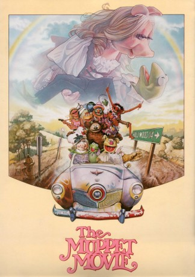
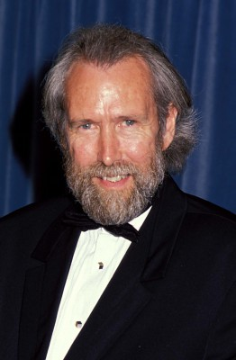
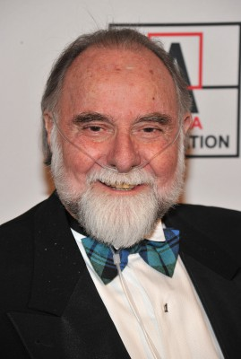
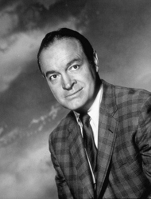

#1386 Muppet Movie
Alternativ: The Muppet Movie
Auszeichnungen: für 2 Oscars nominiert
 
 IMDB-Wertung: 7.6 / 10
IMDB-Wertung: 7.6 / 10  Metascore: 74
Metascore: 74 
Kermit, der Frosch wird von seinem Agenten Dom DeLuise davon überzeugt seine Karriere in Hollywood fortzuführen. Auf den Weg in die Traumfabrik schließen sich ihm noch Miss Piggy, Fozzie Bär und weitere Muppets mit ähnlichen Ambitionen an, womit reichlich Chaos vorprogrammiert ist. Doch das ist nicht alles, denn Kermit wird auch noch von einem Restaurant-Magnaten verfolgt, der seinen Kunden Froschschenkelspezialitäten anbietet...
Jahr: 1979
Dauer: 95 Minuten
FSK:
Land: England Studio: Walt Disney Studios Home EntertainmentTonspuren:
Untertitel: Deutsch,
Auflösung: 720p (1280x688) Größe: 3358 MB
Genre: Komödie, Abenteuer, Familie, Musical
Regisseur: James Frawley
Drehbuch: Jack Burns, Jerry Juhl
Soundtrack: Kenny Ascher, Paul Williams
Darsteller:
-  Jim Henson als Kermit the Frog / Rowlf / Dr. Teeth / Waldorf / Swedish Chef / Link Hogthrob / Doc Hopper's Men
 Frank Oz als Miss Piggy / Fozzie Bear / Animal / Sam the Eagle / Doc Hopper's Men / Marvin Suggs / Swedish Chef, assistant / Motorcycle Guy
Frank Oz als Miss Piggy / Fozzie Bear / Animal / Sam the Eagle / Doc Hopper's Men / Marvin Suggs / Swedish Chef, assistant / Motorcycle Guy-  Jerry Nelson als Floyd Pepper / Crazy Harry / Robin the Frog / Lew Zealand / Camilla / Blue Frackle
 Dave Goelz als The Great Gonzo / Zoot / Dr. Bunsen Honeydew / Doglion / Iraqian in El Sleezo Cafe / Nigel / Pig
Dave Goelz als The Great Gonzo / Zoot / Dr. Bunsen Honeydew / Doglion / Iraqian in El Sleezo Cafe / Nigel / Pig Charles Durning als Doc Hopper
Charles Durning als Doc Hopper Austin Pendleton als Max
Austin Pendleton als Max- Milton Berle als Mad Man Mooney
 Mel Brooks als Professor Max Krassman
Mel Brooks als Professor Max Krassman James Coburn als El Sleezo Cafe Owner
James Coburn als El Sleezo Cafe Owner Dom DeLuise als Bernie the Agent
Dom DeLuise als Bernie the Agent Elliott Gould als Beauty Contest Compere
Elliott Gould als Beauty Contest Compere-  Bob Hope als Ice Cream Vendor
 Madeline Kahn als El Sleezo Patron
Madeline Kahn als El Sleezo Patron Carol Kane als Myth
Carol Kane als Myth Cloris Leachman als Lord's Secretary
Cloris Leachman als Lord's Secretary Steve Martin als Insolent Waiter
Steve Martin als Insolent Waiter Richard Pryor als Balloon Vendor
Richard Pryor als Balloon Vendor Telly Savalas als El Sleezo Tough
Telly Savalas als El Sleezo Tough Orson Welles als Lew Lord
Orson Welles als Lew Lord Paul Williams als El Sleezo Pianist
Paul Williams als El Sleezo Pianist- H.B. Haggerty als Lumberjack
 Bruce Kirby als Gate Guard
Bruce Kirby als Gate Guard Steve Whitmire als Fletcher Bird / Scooter, assistant
Steve Whitmire als Fletcher Bird / Scooter, assistant- Michael Earl als Animal, assistant / Beaker, assistant / Big Bird, assistant / Dr. Teeth, assistant / Fozzie Bear, assistant / Janice, assistant / Scooter, assistant
- Caroll Spinney als Big Bird
- Bob Baker als Muppet Performer , uncredited
- Tim Burton als Muppet Performer , uncredited
 Melinda Dillon als Woman with Balloon , uncredited
Melinda Dillon als Woman with Balloon , uncredited- Earl Kress als Ernie / Bert , uncredited
 John Landis als Grover , uncredited
John Landis als Grover , uncredited- Richard Hunt als Scooter / Statler / Janice / Sweetums / Beaker / Fozzie Bear, assistant
- Edgar Bergen als Himself / Charlie McCarthy -
 Scott Walker als Frog Killer
Scott Walker als Frog Killer- Lawrence Gabriel Jr. als Sailor
- Ira F. Grubman als Bartender
- Tommy Madden als One-Eyed Midget
- James Frawley als Waiter
- Arnold Roberts als Cowboy
- Kathryn Mullen als Camilla, assistant
- Bob Payne als Muppet Performer
- Eren Ozker als Muppet Performer
- Caroly Wilcox als Muppet Performer
- Olga Felgemacher als Muppet Performer
- Buz Suraci als Muppet Performer
- Bruce Schwartz als Muppet Performer
- Tony Basilicato als Muppet Performer
- Adam Hunt als Muppet Performer
- Lisa Henson als Beauty Pageant Model , uncredited
- Jerry Juhl als Muppet Performer , uncredited
- John Lovelady als Muppet Performer , uncredited
Datei: X:\Kinder Collections\Muppets\Muppet Movie (1979, FSK, 1280x688).mkv seit 30.06.2015
Festplatte: Kinder-Filme+Trick
 Es gibt insgesamt 13 Filme in der Gruppe 'Kinder Collections\Muppets'
Es gibt insgesamt 13 Filme in der Gruppe 'Kinder Collections\Muppets'